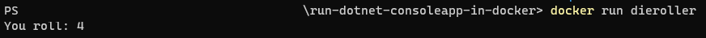

Running a .NET Console App in Docker
Introduction
This is a sort of first part in a series of blog posts I'm going to write introducing how to run .NET apps in Docker. It will start with a very simple example in this blog post and each blog post will add more complicated aspects until we arrive at something more complicated.
These blog posts aren't a deep dive into what Docker is. There is some basic knowledge assumed about what Docker is, not necessrily how to use it. But at least the general idea of what it is/what it's used for.
The Example .NET Console App
In this first simple example we will run a .NET console app in Docker. You can find all the code for this example in the github repo here.
The example .NET console app we will use will be a very simple one that simulates rolling a single (six-sided) die. The code for the console app is two lines:
var rnd = new Random();
Console.WriteLine($"You roll: {rnd.Next(1, 7)}");
That's it. It doesn't do anything very exciting, just output a random number between 1 and 6:

The more interesting bit is how we are going run this in Docker and not via Visual Studio how we normally would.
The Dockerfile
First, we need to add a Dockerfile to our solution. This file is literally called Dockerfile with no file extension and we will add the following lines to it:
FROM mcr.microsoft.com/dotnet/runtime:7.0
WORKDIR /app
COPY src/DieRoller/bin/Debug/net7.0/. .
ENTRYPOINT ["dotnet", "DieRoller.dll"]
Before we go and build and run our Docker container from this file, let's have a quick look at what each of these line does.
FROM mcr.microsoft.com/dotnet/runtime:7.0
This is the base image to use for our docker container. You can see all of the docker images provided by Microsoft here. In our case, we are using the .NET 7.0 runtime image as that's what we need for our .NET 7.0 console app.
WORKDIR /app
This sets the working directory for any commands that follow in the Dockerfile to /app in terms of the image being built docs.
COPY src/DieRoller/bin/Debug/net7.0/. .
This copies everything from src/DieRoller/bin/Debug/net7.0/. on our local machine to the current working directoryu (.) in the docker image, which was alrady set to /app by the previous command.
ENTRYPOINT ["dotnet", "DieRoller.dll"]
This command tells the docker container what to run after it has been initiated. In our case, this is a dotnet based dll.
Building and Running via Docker
To now use this Dockerfile to run our console app there are three steps required:
- Build the console app.
- Build the Docker container.
- Run the Docker container.
Build the Console App
Our setup here is very simplistic - we are using our local mahcine to build everything for the console app, copying it into a Docker container and then executing the dll we built on our machine. So the first step is to build the console via Visual Studio (or whatever IDE you are using) making sure it's built into the required relative path to the Dockerfile - src/DieRoller/bin/Debug/net7.0/ (obviously if you are building to a different location relative to thte Dockerfile on your machine you can change this line in the Dockerfile).
Build the Docker Container
Before we can run the Docker container we need to build it.
In our case, we can build the container using the following command which must be executed in the same folder as the Dockerfile:
docker build -t dieroller .
All this is saying is build a container calling/tagging it dieroller in the current directory.
When you run this command you should see something like the following in the terminal/shell/whatever you ran the command in:

You should also now be able to see the Docker image in your Images list in Docker Desktop:

Run the Docker Container
Now that we have built the Docker container we can run it using the following command:
docker run dieroller
All this is saying is run the dieroller Docker container we have on our machine.
And when you run it you should see the following output:
Which shows our die rolling console app executing.
Note that this has also made a container that we can see in Docker Desktop:
The End
So that's it, we've ran our .NET console app via a Docker container.